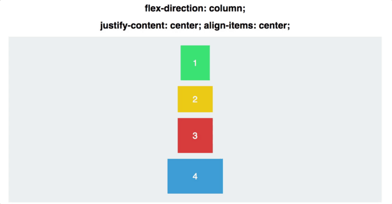

Responsive WebDesign (2010)
Le Responsive WebDesign est la capacité d'une page web à s'adapter et de transformer en fonction du format de l'écran.
Il est apparut dans les années 2010 avec l'avénement des smartphone à partir de 2007.
Avec l'arriver des smartphones, puis des tablettes, ainsi que la multiplication des résolutions, il est devenu essentiel de pouvoir adapté son site de manière simple a chaques écrans.
C'est aussi arrivé en alternative au développement des sites mobiles, second site destinct de la version ordinateur. Cependant il est vite devenu plus pratique de faire un site adaptatif.
Deux éléments on permis le developpement de site responsive.
En 2009, comme préciser plus tôt, est arrivé au sein de CSS3 le Flex Box. Elle permet de disposer ses éléments au sein de la page web (en plus de la grille CSS) et surout de rendre
cette disposition flexible et adaptative avec la résolution de l'écran.

En 2012 Media Query a été introduit, offrant la possibilité au CSS d'adapter le site en fonction de la taille de l'écran. On peut grâce a lui préciser l'évolution du site pour certaines résolutions.